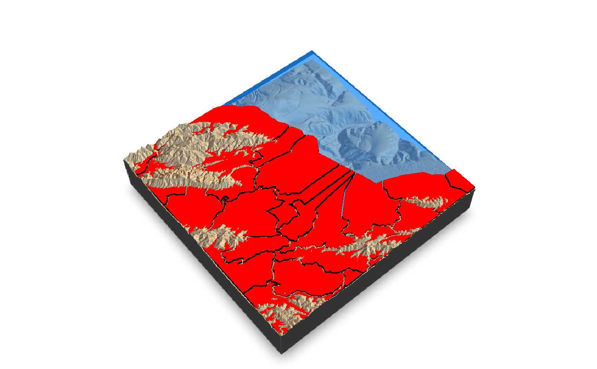
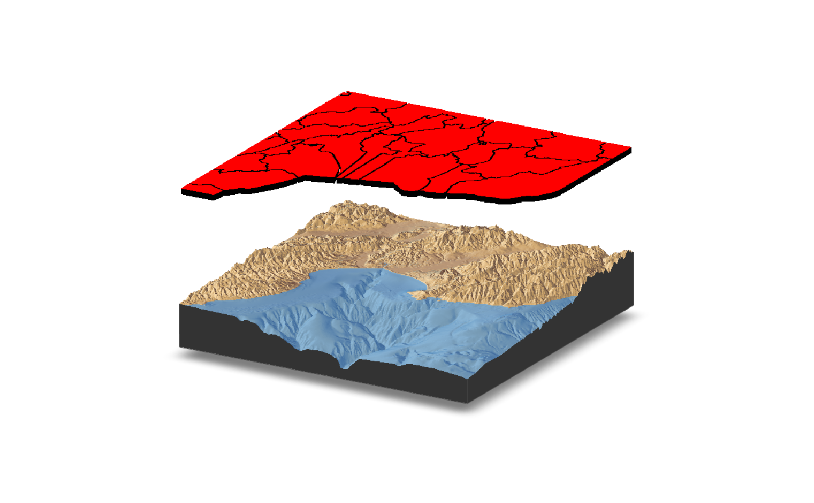
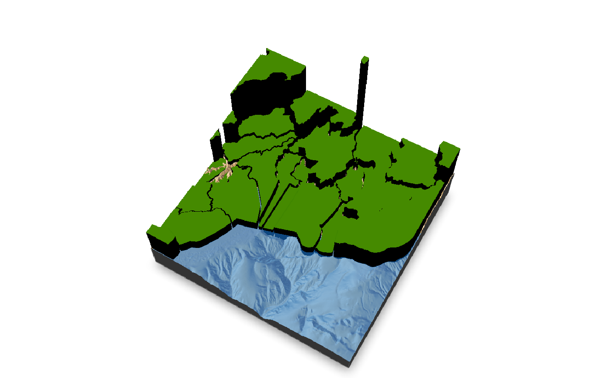
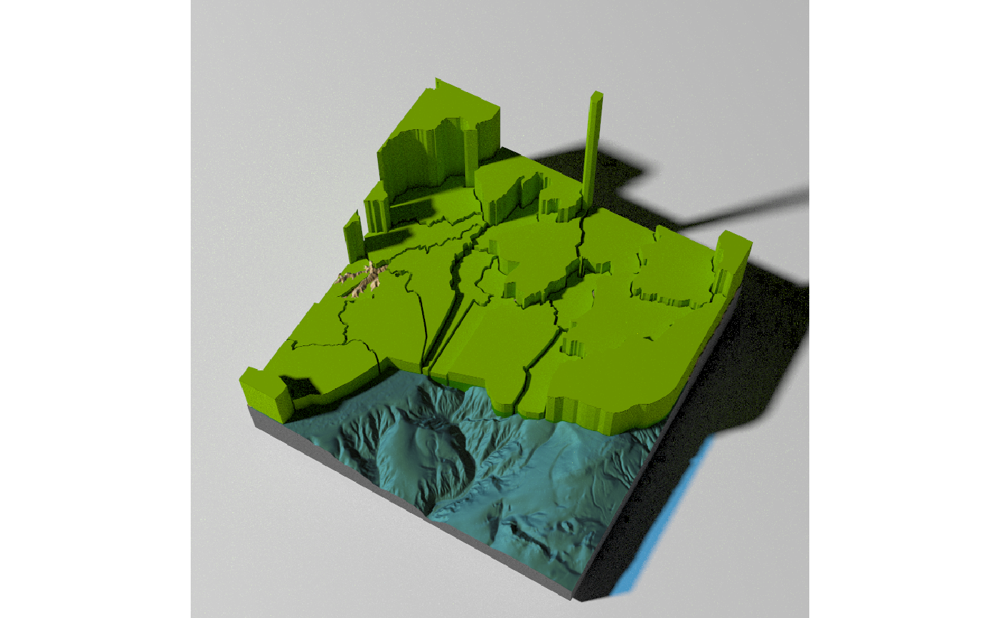

Adds 3D polygons to the current scene, using latitude/longitude or coordinates in the reference system defined by the extent object.
render_polygons( polygon, extent, color = "red", top = 1, bottom = NA, data_column_top = NULL, data_column_bottom = NULL, heightmap = NULL, scale_data = 1, parallel = FALSE, holes = 0, lit = TRUE, light_altitude = c(45, 30), light_direction = c(315, 135), light_intensity = 0.3, clear_previous = FALSE )
| polygon | `sf` object, "SpatialPolygon" `sp` object, or xy coordinates of polygon represented in a way that can be processed by `xy.coords()`. If xy-coordinate based polygons are open, they will be closed by adding an edge from the last point to the first. |
|---|---|
| extent | A `raster::Extent` object with the bounding box for the height map used to generate the original map. |
| color | Default `black`. Color of the polygon. |
| top | Default `1`. Extruded top distance. If this equals `bottom`, the polygon will not be extruded and just the one side will be rendered. |
| bottom | Default `0`. Extruded bottom distance. If this equals `top`, the polygon will not be extruded and just the one side will be rendered. |
| data_column_top | Default `NULL`. A string indicating the column in the `sf` object to use to specify the top of the extruded polygon. |
| data_column_bottom | Default `NULL`. A string indicating the column in the `sf` object to use to specify the bottom of the extruded polygon. |
| heightmap | Default `NULL`. Automatically extracted from the rgl window--only use if auto-extraction of matrix extent isn't working. A two-dimensional matrix, where each entry in the matrix is the elevation at that point. All points are assumed to be evenly spaced. |
| scale_data | Default `1`. If specifying `data_column_top` or `data_column_bottom`, how much to scale that value when rendering. |
| parallel | Default `FALSE`. If `TRUE`, polygons will be extruded in parallel, which may be faster (depending on how many geometries are in `polygon`). |
| holes | Default `0`. If passing in a polygon directly, this specifies which index represents the holes in the polygon. See the `earcut` function in the `decido` package for more information. |
| lit | Default `TRUE`. Whether to light the polygons. |
| light_altitude | Default `c(45, 60)`. Degree(s) from the horizon from which to light the polygons. |
| light_direction | Default `c(45, 60)`. Degree(s) from north from which to light the polygons. |
| light_intensity | Default `0.3`. Intensity of the specular highlight on the polygons. |
| clear_previous | Default `FALSE`. If `TRUE`, it will clear all existing polygons. |
# \donttest{ #Render the county borders as polygons in Monterey Bay montereybay %>% sphere_shade(texture = "desert") %>% add_shadow(ray_shade(montereybay,zscale=50)) %>% plot_3d(montereybay,water=TRUE, windowsize=800, watercolor="dodgerblue")#>render_camera(theta=140, phi=55, zoom = 0.85, fov=30) #We will apply a negative buffer to create space between adjacent polygons. You may #have to call `sf::sf_use_s2(FALSE)` before running this code to get it to run. mont_county_buff = sf::st_simplify(sf::st_buffer(monterey_counties_sf,-0.003), dTolerance=0.001)#> Warning: st_buffer does not correctly buffer longitude/latitude data#>#> Warning: st_simplify does not correctly simplify longitude/latitude data, dTolerance needs to be in decimal degreesrender_polygons(mont_county_buff, extent = attr(montereybay,"extent"), top=10, parallel=TRUE) render_snapshot()
#We can specify the bottom of the polygons as well. Here I float the polygons above the surface #by specifying the bottom argument. We clear the previous polygons with `clear_previous = TRUE`. render_camera(theta=-60, phi=20, zoom = 0.85, fov=0) render_polygons(mont_county_buff, extent = attr(montereybay,"extent"), bottom = 190, top=200, parallel=TRUE,clear_previous=TRUE) render_snapshot()
#We can set the height of the data to a column in the sf object: we'll use the land area. #We'll have to scale this value because it's max value is 2.6 billion: render_camera(theta=-60, phi=60, zoom = 0.85, fov=30) render_polygons(mont_county_buff, extent = attr(montereybay,"extent"), data_column_top = "ALAND", scale_data = 300/(2.6E9), color="chartreuse4", parallel=TRUE,clear_previous=TRUE) render_snapshot()
#This function also works with `render_highquality()` render_highquality(samples=400, clamp_value=10)